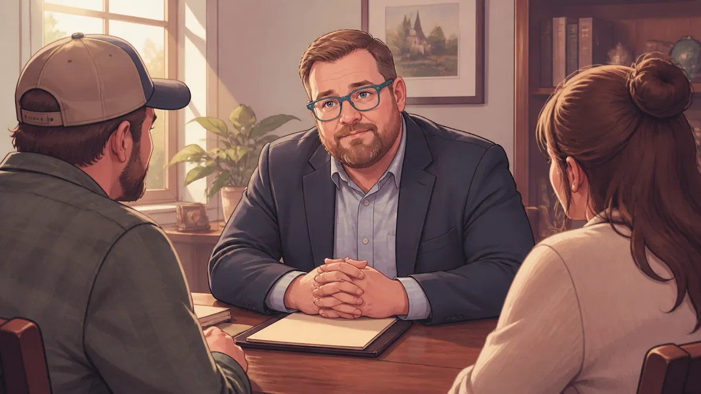

Can You Skip the Home Study in an Indiana Adoption? (Only If You're a Stepparent or Grandparent)

Adopting a child is an exciting time for any family. Whether you live in North Vernon, Scipio, or Hayden, the goal is the same: you want to provide a loving, permanent home.
However, the legal process can feel like a mountain of paperwork. One of the biggest hurdles is the home study. A home study is when a social worker visits your house. They look at your living space and ask questions about your life. This is to make sure the home is safe for the child.
Many people ask me, "Chris, can we skip the home study?"
The answer is yes: but only in very specific cases. In Indiana, the law is very strict about who can skip this step.
The Golden Rule: Stepparents and Grandparents
In Indiana, there is a specific law (called IC 31-19-8-2) that talks about skipping the home study. It says the court has the power to waive (or skip) the home study and the supervision period.
But there is a big "if."
The court can only do this if one of the people adopting is a stepparent or a grandparent.
If you are a stepparent who has been raising your spouse's child, or a grandparent who is making things official for your grandchild, the judge can decide you don't need the full home study. This is because the law assumes you already have a close, established bond with the child.
Why Other Relatives Can't Skip It
I often hear from wonderful aunts, uncles, cousins, and siblings. They might have been caring for a relative's child for years. They are great parents, and their home is perfect. They often ask if the judge can skip the home study for them too.
Unfortunately, the answer is no.
Indiana courts do not have the legal authority to skip the home study for anyone who isn't a stepparent or a grandparent. It doesn't matter how long you have lived together or how much you love each other. The judge's hands are tied by the law.
If you are an aunt, uncle, or family friend, you will need to go through the full home study process. While it adds a bit of time and cost, I tell my clients not to worry. It is simply a way for the state to double-check that everything is in order for the child.
What You Still Have to Do
Even if you are a stepparent or grandparent and the judge lets you skip the home study, you aren't completely off the hook. There are some things that nobody can skip.
Criminal Background Checks. Indiana law (IC 31-19-2-7.3) says that criminal background checks are mandatory. Every person adopting must have their history checked to ensure the child is in safe hands.
Court Hearings. You still have to file the right papers and go before a judge in Jennings County or whichever county you are in.
Consent. You still need to make sure all the proper legal consents are signed by the biological parents (if required).

How a Small Town Lawyer Can Help
As a small town attorney, I wear many hats. I don't just fill out forms; I listen to what you have to say. I know that every family in North Vernon, Vernon, or Commiskey has a different story.
When you come to Chris Doran Law LLC, we start by sitting down and looking at your options.
We look at your relationship with the child.
We check if you qualify for a waiver.
We explain the costs upfront, including travel fees if I need to visit courts in surrounding areas like Columbus or Seymour.
I believe in being honest and transparent. If you don't qualify for a waiver, I will tell you that directly. Then, I will help you find a great agency to do your home study so you can keep moving forward. My goal is to help with your legal needs without making things more complicated than they need to be.
Serving Our Local Communities
I am proud to serve families across Jennings County. Whether you are in Scipio, Hayden, or Butlerville, I am here to help. I handle a wide variety of family law matters, and adoption is one of the most rewarding parts of my job.
If you are thinking about adoption and want to know what steps you need to take, reach out to me. I'll listen to your concerns and give you clear, practical options.
Adoption is a big step, but you don't have to walk the path alone. Let's work together to make your family official.
You can learn more about me and my experience with complex legal matters on my About Me page. When you are ready, call my office or send me a message. Let's sit down and talk about how to grow your family.